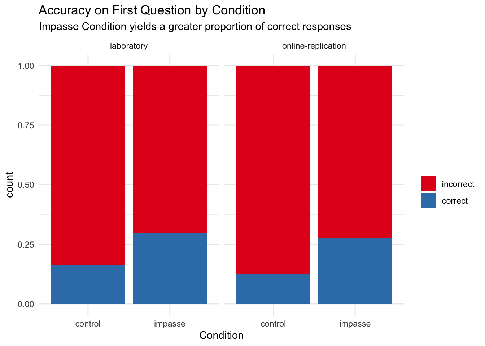
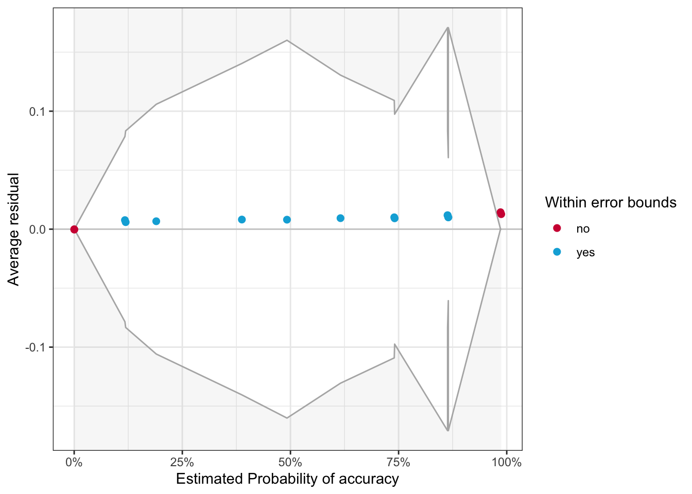
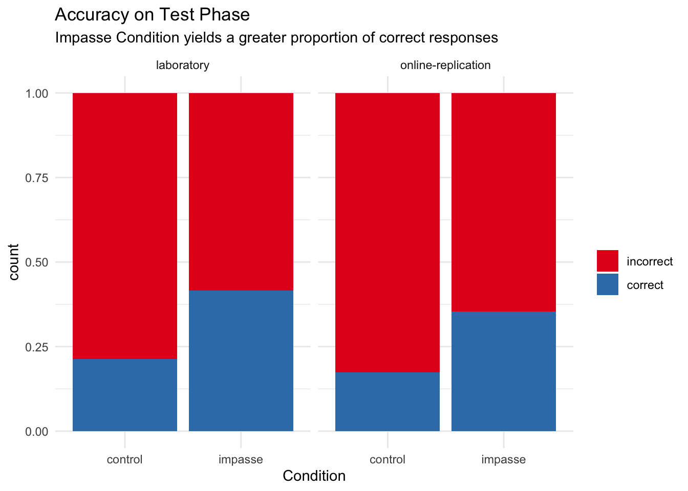
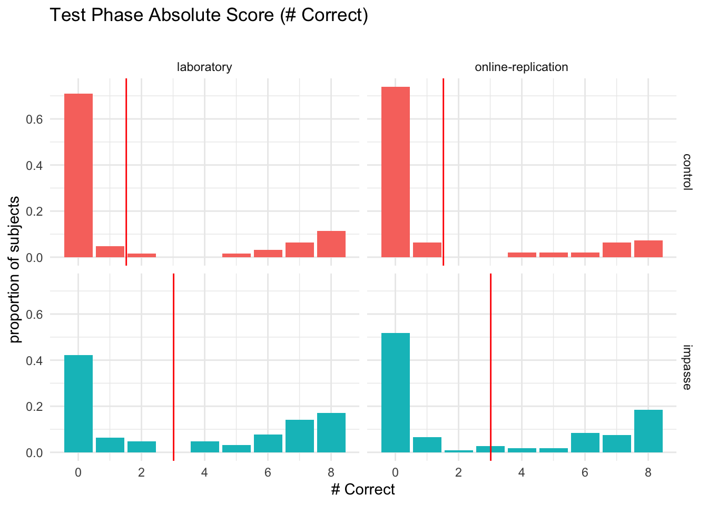
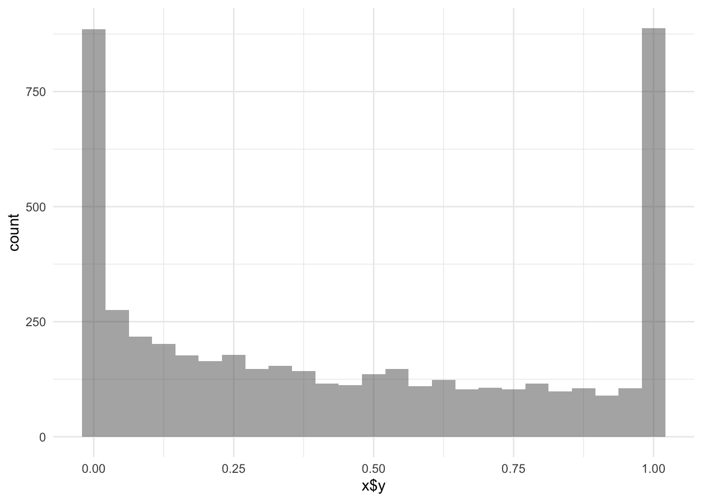
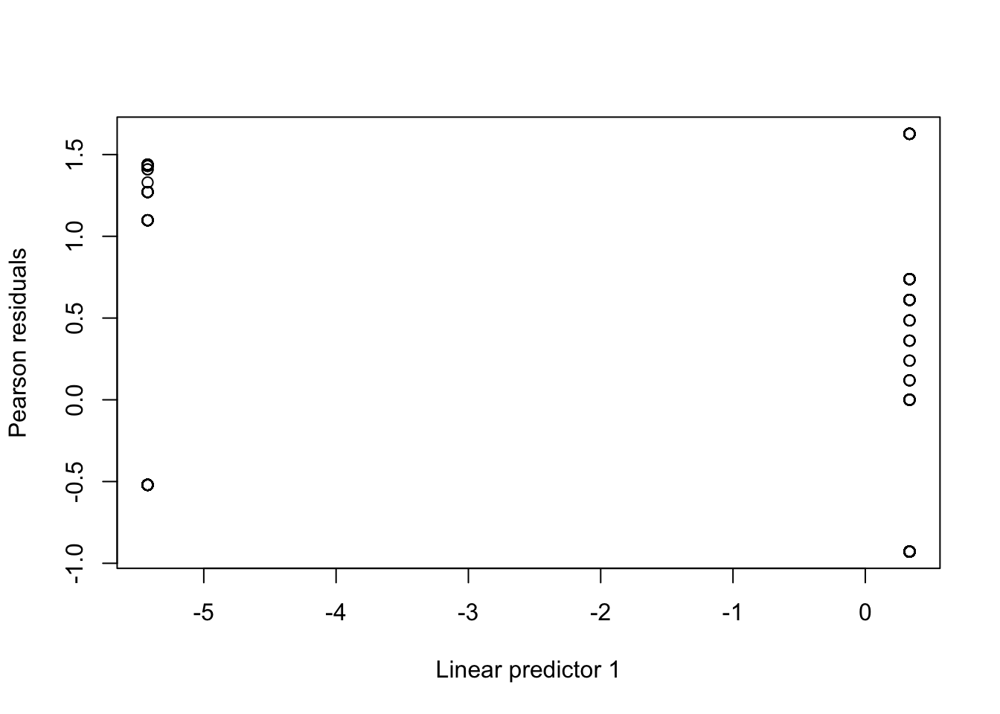

In this notebook we use data from study SGC3A to explore different modelling techniques and assess their suitability for the bimodal accuracy distributions.
# HACK WD FOR LOCAL RUNNING?# imac = "/Users/amyraefox/Code/SGC-Scaffolding_Graph_Comprehension/SGC-X/ANALYSIS/MAIN"mbp="/Users/amyfox/Sites/RESEARCH/SGC—Scaffolding Graph Comprehension/SGC-X/ANALYSIS/MAIN"setwd(mbp)#IMPORT DATA df_items<-read_rds('analysis/SGC3A/data/2-scored-data/sgc3a_scored_items.rds')df_subjects<-read_rds('analysis/SGC3A/data/2-scored-data/sgc3a_scored_participants.rds')#PREP DATA df_lab<-df_subjects%>%filter(pretty_mode=="laboratory")df_online<-df_subjects%>%filter(pretty_mode=="online-replication")
SINGLE ITEM LEVEL
Q1 Absolute, Interpretation Scores
CODE
#FILTER THE DATASET [use subjects, bc it has covariates on that record]df_q1<-df_subjects%>%mutate(
accuracy =recode_factor(item_q1_NABS, "0"="incorrect","1"="correct"),
rt =item_q1_rt)%>%dplyr::select(accuracy, rt, pretty_condition, pretty_mode)#GROUPED PROPORTIONAL BAR CHART# gf_props(~accuracy, fill = ~pretty_condition, # position = position_dodge(), data = df_q1) %>% # gf_facet_grid(~pretty_mode) +# labs(x = "Correct Response on Q 1",# title = "Accuracy on First Question by Condition",# subtitle="Impasse Condition yields a greater proportion of correct responses") #theme(legend.position = "none")#STACKED BAR CHARTdf_q1%>%ggplot(data =.,
mapping =aes(x =pretty_condition,
fill =accuracy))+geom_bar(position ="fill")+#,color = "black") +scale_fill_brewer(palette ="Set1")+facet_wrap(~pretty_mode)+labs(#y = "Correct Response on Q 1",
title ="Accuracy on First Question by Condition",
x ="Condition",
fill ="",
subtitle="Impasse Condition yields a greater proportion of correct responses")

CHI SQUARE
(Combined)
CODE
#combined dataset df<-df_q1#MOSAIC PLOT#note: blue indicates cell count higher than expected, red indicates cell count less than expected; under null hypothesismosaicplot(main="Accuracy on First Question by Condition",
data =df, pretty_condition~accuracy, shade =T, color =2)
observed values expected values % within accuracy % within pretty_condition
Combining data across both sessions (n=330), a Pearson’s Chi-squared test suggests a statistically significant relationship between response accuracy on the first question and experimental condition, \(\chi_2\) (1) = 10.3, p = 0.001. The sample odds ratio (2.46, p = 0.001, 95% CI [1.37, 4.53]) indicates that the odds of providing a correct response to the first question are 2.46 higher for subjects in the impasse condition than those in the control condition.
(In Person)
CODE
#lab onlydf<-df_q1%>%filter(pretty_mode=="laboratory")#MOSAIC PLOT#note: blue indicates cell count higher than expected, red indicates cell count less than expected; under null hypothesismosaicplot(main="Accuracy on First Question by Condition",
data =df, pretty_condition~accuracy,
shade =T)
observed values expected values % within accuracy % within pretty_condition
For (In Person) data collection (n=126) the Pearson’s Chi-squared test (of independence) indicates a relationship between response accuracy on the first question and experimental condition that is not significant at the alpha level 0.05, \(\chi^2\) (1) = 10.3, p = 0.07. Thus we have insufficient evidence to reject the null hypothesis that the odds ratio is equal to 1. In this particular data sample, the odds ratio (Odds Ratio = 2.18, p = 0.055, 95% CI [0.982, +Inf]) indicates that the odds of producing a correct response on the first question were 2.18 times greater if a subject was in the impasse condition, than in the control condition .
(Online Replication)
CODE
#online onlydf<-df_q1%>%filter(pretty_mode=="online-replication")#MOSAIC PLOT#note: blue indicates cell count higher than expected, red indicates cell count less than expected; under null hypothesismosaicplot(main="Accuracy on First Question by Condition",
data =df, pretty_condition~accuracy, shade =T)
observed values expected values % within accuracy % within pretty_condition
For online data collection (n=204), a Pearson’s Chi-squared test (of independence) indicates a statistically significant relationship between response accuracy on the first question and experimental condition, \(\chi^2\) (1) = 7.26, p = 0.009. Thus we have sufficient evidence to reject the null hypothesis that the odds ratio is equal to 1. The odds ratio (Odds Ratio = 2.68, p = 0.005, 95% CI [1.37, +Inf]) indicates that the odds of producing a correct response on the first question were 2.68 times greater if a subject was in the impasse condition, than in the control condition .
LOGISTIC REGRESSION
Fit a logistic regression (at the subject level), predicting Q1 accuracy (absolute score) by condition.
Fit Model
First, we fit a logistic regression with condition as predictor, and compare its fit to an empty (intercept-only) model.
CODE
#combineddf<-df_items%>%filter(q==1)%>%mutate(
accuracy =as.factor(score_niceABS))# FREQUENCY TABLE# my.table <- table(df$accuracy, df$pretty_condition)# addmargins(my.table) #counts# addmargins(prop.table(my.table)) #props# MODEL FITTING:::::::::::::::::::::::::::::::::::::#: 1 EMPTY MODEL baseline glm model intercept onlym0=glm(accuracy~1, data =df, family ="binomial")print("EMPTY MODEL")
Call:
glm(formula = accuracy ~ 1, family = "binomial", data = df)
Deviance Residuals:
Min 1Q Median 3Q Max
-0.696 -0.696 -0.696 -0.696 1.753
Coefficients:
Estimate Std. Error z value Pr(>|z|)
(Intercept) -1.294 0.134 -9.66 <2e-16 ***
---
Signif. codes: 0 '***' 0.001 '**' 0.01 '*' 0.05 '.' 0.1 ' ' 1
(Dispersion parameter for binomial family taken to be 1)
Null deviance: 343.66 on 329 degrees of freedom
Residual deviance: 343.66 on 329 degrees of freedom
AIC: 345.7
Number of Fisher Scoring iterations: 4
CODE
#: 2 CONDITION modelm1<-glm(accuracy~pretty_condition, data =df, family ="binomial")print("PREDICTOR MODEL")
The logistic regression intercept gives the log odds of the outcome for the reference level of the predictor variable
The logistic regression coefficients give the change in the log odds of the outcome for a one unit increase in the predictor variable.
[the empty model
The intercept of an empty model (glm(accuracy ~ 1) is equal to log(p/(1-p)), where p = the overall probability of a correct response (df$accuracy ==1 ).
In SGC3A Q1 accuracy this = 71 correct / 330 = 0.215 -> log(0.215 / (1-0.215)) = -1.29.
In other words, the intercept from the model with no predictor variables is the estimated log odds of a correct response for the whole sample.
We can also transform the log of the odds back to a probability: p = ODDS/ (1+ODDS) = exp(-1.29)/(1+exp(-1.29)) = 0.215. This should matched the prediction of the empty model
[a dichotomous predictor]
natural log (odds of +) = -1.822 + 0.901(x1) ; x1 = 0 for control, 1 for impasse
INTERCEPT: log odds of (+ response) in control condition
log odds of (+) in control : -1.822 + 0.9(0) = -1.822
convert to odds by exponentiating the coefficients
log odds of (+) in control = exp(-1.822) = 0.162 odds
convert to probability by formula =>
p(+) = odds / (1+odds) = 0.162 / (1 + 0.162) = 0.139
probability of (+) in control = ~14%
B1 COEFFICIENT: DIFFERENCE in log odds of (+) in impasse vs. control
log odds of (+) in impasse: -1.822 + 0.901 = -0.921
convert to odds by exponentiating log odds
log odds (+) in impasse = exp(-0.921) = 0.398
convert to probability by formula =>
p(+) = odds / (1 + odds) = 0.398 / (1+0.398) = 0.285
probaility of (+) in impasse = ~ 29%
ODDS RATIO : exponentiated B1 COEFFICIENT
B1 = (slope of logit model = difference in log odds = log odds ratio
B1 = 0.901 is log odds ratio of (+) in impasse vs control
exp(b1) = exp(0.901) = 2.46
Ratio of odds in impasse are 2.46 times higher than in control. Bein in the impasse condition yields odds athat are 2.46 X higher than in control.
Warning: 'data_findcols()' is deprecated and will be removed in a future update.
Its usage is discouraged. Please use 'data_find()' instead.
Warning: 'data_findcols()' is deprecated and will be removed in a future update.
Its usage is discouraged. Please use 'data_find()' instead.
Warning: 'data_findcols()' is deprecated and will be removed in a future update.
Its usage is discouraged. Please use 'data_find()' instead.
Warning: 'data_findcols()' is deprecated and will be removed in a future update.
Its usage is discouraged. Please use 'data_find()' instead.
Warning: 'data_findcols()' is deprecated and will be removed in a future update.
Its usage is discouraged. Please use 'data_find()' instead.
We fitted a logistic model (estimated using ML) to predict accuracy with pretty_condition (formula: accuracy ~ pretty_condition). The model's explanatory power is weak (Tjur's R2 = 0.03). The model's intercept, corresponding to pretty_condition = control, is at -1.82 (95% CI [-2.30, -1.39], p < .001). Within this model:
- The effect of pretty condition [impasse] is statistically significant and positive (beta = 0.90, 95% CI [0.35, 1.48], p = 0.002; Std. beta = 0.90, 95% CI [0.35, 1.48])
Standardized parameters were obtained by fitting the model on a standardized version of the dataset. 95% Confidence Intervals (CIs) and p-values were computed using
# Retrieve predictions as probabilities # (for each level of the predictor)p.control<-predict(m1,data.frame(pretty_condition="control"),type="response")paste("Probability of success in control,", p.control)
[1] "Probability of success in control, 0.139240506329147"
CODE
p.impasse<-predict(m1,data.frame(pretty_condition="impasse"),type="response")paste("Probability of success in impasse,", p.impasse)
[1] "Probability of success in impasse, 0.284883720930631"
#SJPLOT | MODEL | PROBABILITIES# plot_model(m1, type="pred",# show.intercept = TRUE, # show.values = TRUE,# title = "Model Predicted Probability of Accuracy",# axis.title = c("Condition","Probability of Accurate Response"))#GGEFFECTS | MODEL | PROBABILITIES# library(ggeffects)ggeffect(model =m1)%>%plot()
Ok: About 100% of the residuals are inside the error bounds.
Inference
We fit a logistic regression model to analyze the effect of experimental condition on probability of a correct answer on the first question. In this model, the effect of condition is statistically significant (z = 3.16, p = 0.0016). The model predicts that the odds of a correct response on the first question in the impasse condition increase by 146% (\(e^{beta_1}\) = 2.46, 95% CI [1.42, 4.37]) over the control condition.
Equivalent statements:
being in impasse condition increases log odds of correct response by 0.901 (over control)
being in impasse increases odds of correct response in impasse over control increases by factor of 2.46
probability of correct response in control predicted as 28.5%, vs only 14% in control condition
# #CREATE DATAFRAME OF Q1# df <- df_items %>% filter(q ==1) %>% mutate(scaled = as.factor(score_SCALED))# # #MODEL# m <- polr(scaled ~ condition , data = df, Hess=TRUE)# summary(m)# confint(m)# performance(m)# report(m)# # #exponentiate coefficients and CIs # ci <- confint(m)# ci# e <- coef(m)# e# # exp(cbind(e,ci))# # # Retrieve predictions as probabilities # # (for each level of the predictor)# # p.control <- predict(m,data.frame(condition="111"),type="response")# # paste("Probability of success in control,", p.control)# # p.impasse <- predict(m,data.frame(condition="121"),type="response")# # paste("Probability of success in impasse,", p.impasse)# # # Plot Predicted data and original data points# # ggplot(df, aes(x=condition, y=accuracy)) + # # geom_point() +# # stat_smooth(method="glm", color="green", se=FALSE,# # method.args = list(family=binomial))# # #TO PLOT ALL EFFECTS# library(effects)# plot(allEffects(m))# # #SJPLOT# library(sjPlot)# plot_model(m, )# # # #CONVERT TO PROBABILITIES# newdat <- data.frame(condition=c("111","121"))# prob <- (phat <- predict(object = m, newdat, type="p"))# prob#
REPEATED ITEM LEVEL
Test Phase Accuracy (absolute score)
Mixed Logistic Regression
Fit a mixed logistic regression (at the item level), predicting accuracy (absolute score) on test phase questions by condition; accounting for random effects of subject.
Fit Model
CODE
#SETUP DATA #PREPARE DATA n_items=8#number of items in test#item leveldf_test=df_items%>%filter(q%nin%c(1,2,3,4,5,6,9))%>%mutate(
accuracy =as.factor(score_niceABS),
q =as.factor(q))df<-df_testlibrary(lmerTest)#for CIs in glmer ## 1 | SETUP RANDOM EFFECT#:: EMPTY MODEL (baseline, no random effect)m0=glm(accuracy~1, family ="binomial", data =df)#:: RANDOM INTERCEPT SUBJECTmm.rS<-glmer(accuracy~(1|subject), data =df,family ="binomial")# :: TEST random effectpaste("AIC with random effect is lower than glm empty model?", m0$aic>AIC(logLik(mm.rS)))
[1] "AIC with random effect is lower than glm empty model? TRUE"
CODE
test_lrt(m0,mm.rS)#same as anova(m0, m1, test = "Chi")
# Likelihood-Ratio-Test (LRT) for Model Comparison
Name | Model | df | df_diff | Chi2 | p
--------------------------------------------------
m0 | glm | 1 | | |
mm.rS | glmerMod | 2 | 1 | 1783.73 | < .001
CODE
paste("Likelihood Ratio test is significant? p = ",(test_lrt(m0,mm.rS))$p[2])
[1] "Likelihood Ratio test is significant? p = 0"
CODE
## 2 | ADD FIXED EFFECT# SUBJECT INTERCEPT | FIXED CONDITION mm.CrS<-glmer(accuracy~pretty_condition+(1|subject),
data =df,family ="binomial")# :: TEST fixed factor paste("AIC with random effect is lower than glm empty model?", AIC(logLik(mm.rS))>AIC(logLik(mm.CrS)))
[1] "AIC with random effect is lower than glm empty model? TRUE"
CODE
test_lrt(mm.rS,mm.CrS)#same as anova(m0, m1, test = "Chi")
# Likelihood-Ratio-Test (LRT) for Model Comparison
Name | Model | df | df_diff | Chi2 | p
-----------------------------------------------
mm.rS | glmerMod | 2 | | |
mm.CrS | glmerMod | 3 | 1 | 4.98 | 0.026
CODE
paste("Likelihood Ratio test is significant? p = ",(test_lrt(mm.rS,mm.CrS))$p[2])
[1] "Likelihood Ratio test is significant? p = 0.0256331468201315"
Warning: 'data_findcols()' is deprecated and will be removed in a future update.
Its usage is discouraged. Please use 'data_find()' instead.
Warning: 'data_findcols()' is deprecated and will be removed in a future update.
Its usage is discouraged. Please use 'data_find()' instead.
Warning: 'data_findcols()' is deprecated and will be removed in a future update.
Its usage is discouraged. Please use 'data_find()' instead.
Warning: 'data_findcols()' is deprecated and will be removed in a future update.
Its usage is discouraged. Please use 'data_find()' instead.
Warning: 'data_findcols()' is deprecated and will be removed in a future update.
Its usage is discouraged. Please use 'data_find()' instead.
We fitted a logistic mixed model (estimated using ML and Nelder-Mead optimizer) to predict accuracy with pretty_condition (formula: accuracy ~ pretty_condition). The model included subject as random effect (formula: ~1 | subject). The model's total explanatory power is substantial (conditional R2 = 0.97) and the part related to the fixed effects alone (marginal R2) is of 5.50e-03. The model's intercept, corresponding to pretty_condition = control, is at -9.18 (95% CI [-10.51, -7.85], p < .001). Within this model:
- The effect of pretty condition [impasse] is statistically significant and positive (beta = 1.63, 95% CI [0.16, 3.11], p = 0.030; Std. beta = 1.63, 95% CI [0.16, 3.11])
Standardized parameters were obtained by fitting the model on a standardized version of the dataset. 95% Confidence Intervals (CIs) and p-values were computed using the Wald approximation.
#SJPLOT | MODEL | PROBABILITIESplot_model(mm.CrS, type="pred",
show.intercept =TRUE,
show.values =TRUE,
title ="Model Predicted Probability of Accuracy",
axis.title =c("Condition","Probability of Accurate Response"))
Warning: Probably bad model fit. Only about 75% of the residuals are inside the error bounds.

Inference
We fit a mixed-effect binomial logistic regression model with random intercepts for subjects to investigate the effect of condition on test phase item accuracy. The model including a fixed effect of condition performed significantly better than an intercept-only baseline model (χ2(3): 4.98, p < 0.05). Consistent with the pattern of results for the first question only, across all test-phase items, being in the impasse condition increases the odds of a correct response by a factor of 5 over the control condition \(e^{\beta_1}\) = 5.11, 95% CI [1.17,22,36], p < 0.05.
#PREPARE DATA n_items=8#number of items in test#item leveldf=df_items%>%filter(q%nin%c(1,2,3,4,5,6,9))%>%mutate(
accuracy =recode_factor(score_niceABS, "0"="incorrect","1"="correct"),
q =as.factor(q))#STACKED PROPORTIONAL BAR CHARTdf%>%ggplot(data =.,
mapping =aes(x =pretty_condition,
fill =accuracy))+geom_bar(position ="fill")+#,color = "black") +scale_fill_brewer(palette ="Set1")+facet_wrap(~pretty_mode)+labs(#y = "",
title ="Accuracy on Test Phase",
x ="Condition",
fill ="",
subtitle="Impasse Condition yields a greater proportion of correct responses")

CODE
#GROUPED PROPORTIONAL BAR CHART# gf_props(~accuracy, fill = ~pretty_condition, x =~pretty_condition,# position = position_dodge(), data = df) %>% # gf_facet_grid(~pretty_mode) +# labs(x = "Correct Responses in Test Phase",# title = "Accuracy on Task by Condition",# subtitle="Impasse Condition yields a greater proportion of correct responses")#FACETED HISTOGRAMstats=df_subjects%>%group_by(pretty_condition)%>%dplyr::summarise(mean =mean(item_test_NABS))gf_props(~item_test_NABS,
fill =~pretty_condition, data =df_subjects)%>%gf_facet_grid(pretty_condition~pretty_mode)%>%gf_vline(data =stats, xintercept =~mean, color ="red")+labs(x ="# Correct",
y ="proportion of subjects",
title ="Test Phase Absolute Score (# Correct)",
subtitle ="")+theme(legend.position ="blank")

Linear Regression
LM on Test Phase absolute score as number of questions, rather than % correct.
CODE
#SCORE predicted by CONDITIONlm.1<-lm(item_test_NABS~pretty_condition, data =df_subjects)paste("Model")
Warning: 'data_findcols()' is deprecated and will be removed in a future update.
Its usage is discouraged. Please use 'data_find()' instead.
Warning: 'data_findcols()' is deprecated and will be removed in a future update.
Its usage is discouraged. Please use 'data_find()' instead.
Warning: 'data_findcols()' is deprecated and will be removed in a future update.
Its usage is discouraged. Please use 'data_find()' instead.
We fitted a linear model (estimated using OLS) to predict item_test_NABS with pretty_condition (formula: item_test_NABS ~ pretty_condition). The model explains a statistically significant and weak proportion of variance (R2 = 0.05, F(1, 328) = 18.52, p < .001, adj. R2 = 0.05). The model's intercept, corresponding to pretty_condition = control, is at 1.52 (95% CI [1.02, 2.01], t(328) = 6.04, p < .001). Within this model:
- The effect of pretty condition [impasse] is statistically significant and positive (beta = 1.50, 95% CI [0.81, 2.18], t(328) = 4.30, p < .001; Std. beta = 0.46, 95% CI [0.25, 0.67])
Standardized parameters were obtained by fitting the model on a standardized version of the dataset. 95% Confidence Intervals (CIs) and p-values were computed using the Wald approximation.
The outcome variable absolute score is clearly not normal. As it represents the cumulative number of items a participant has answered correctly, we can consider it a type of count, (ie. count of the number of questions the participant got correct) and attempt to model it using a General Linear Model with the Poisson distribution (and the default log-link function).
CODE
#POISSON#SCORE predicted by CONDITION --> POISSON DISTRIBUTIONp.1<-glm(item_test_NABS~pretty_condition, data =df_subjects, family ="poisson")paste("Model")
Warning: 'data_findcols()' is deprecated and will be removed in a future update.
Its usage is discouraged. Please use 'data_find()' instead.
Warning: 'data_findcols()' is deprecated and will be removed in a future update.
Its usage is discouraged. Please use 'data_find()' instead.
Warning: 'data_findcols()' is deprecated and will be removed in a future update.
Its usage is discouraged. Please use 'data_find()' instead.
Warning: 'data_findcols()' is deprecated and will be removed in a future update.
Its usage is discouraged. Please use 'data_find()' instead.
Warning: 'data_findcols()' is deprecated and will be removed in a future update.
Its usage is discouraged. Please use 'data_find()' instead.
We fitted a poisson model (estimated using ML) to predict item_test_NABS with pretty_condition (formula: item_test_NABS ~ pretty_condition). The model's explanatory power is moderate (Nagelkerke's R2 = 0.22). The model's intercept, corresponding to pretty_condition = control, is at 0.42 (95% CI [0.29, 0.54], p < .001). Within this model:
- The effect of pretty condition [impasse] is statistically significant and positive (beta = 0.69, 95% CI [0.53, 0.84], p < .001; Std. beta = 0.69, 95% CI [0.53, 0.84])
Standardized parameters were obtained by fitting the model on a standardized version of the dataset. 95% Confidence Intervals (CIs) and p-values were computed using
Warning: 'data_findcols()' is deprecated and will be removed in a future update.
Its usage is discouraged. Please use 'data_find()' instead.
Warning: 'data_findcols()' is deprecated and will be removed in a future update.
Its usage is discouraged. Please use 'data_find()' instead.
Warning: 'data_findcols()' is deprecated and will be removed in a future update.
Its usage is discouraged. Please use 'data_find()' instead.
Warning: 'data_findcols()' is deprecated and will be removed in a future update.
Its usage is discouraged. Please use 'data_find()' instead.
Warning: 'data_findcols()' is deprecated and will be removed in a future update.
Its usage is discouraged. Please use 'data_find()' instead.
We fitted a zero-inflated poisson model to predict item_test_NABS with item_q1_rt and pretty_condition (formula: item_test_NABS ~ item_q1_rt). The model's explanatory power is substantial (R2 = 0.35, adj. R2 = 0.35). The model's intercept, corresponding to item_q1_rt = 0, is at 1.65 (95% CI [1.54, 1.77], p < .001). Within this model:
- The effect of item q1 rt is statistically significant and positive (beta = 1.69e-03, 95% CI [2.52e-05, 3.35e-03], p = 0.047; Std. beta = 0.06, 95% CI [7.11e-04, 0.12])
- The effect of pretty condition [impasse] is statistically significant and negative (beta = -1.06, 95% CI [-1.52, -0.59], p < .001; Std. beta = -1.06, 95% CI [-1.52, -0.59])
Standardized parameters were obtained by fitting the model on a standardized version of the dataset.
Warning: 'data_findcols()' is deprecated and will be removed in a future update.
Its usage is discouraged. Please use 'data_find()' instead.
Warning: 'data_findcols()' is deprecated and will be removed in a future update.
Its usage is discouraged. Please use 'data_find()' instead.
Warning: 'data_findcols()' is deprecated and will be removed in a future update.
Its usage is discouraged. Please use 'data_find()' instead.
Warning: 'data_findcols()' is deprecated and will be removed in a future update.
Its usage is discouraged. Please use 'data_find()' instead.
Warning: 'data_findcols()' is deprecated and will be removed in a future update.
Its usage is discouraged. Please use 'data_find()' instead.
We fitted a negative-binomial model (estimated using ML) to predict item_test_NABS with pretty_condition (formula: item_test_NABS ~ pretty_condition). The model's explanatory power is weak (Nagelkerke's R2 = 0.04). The model's intercept, corresponding to pretty_condition = control, is at 0.42 (95% CI [0.10, 0.77], p = 0.014). Within this model:
- The effect of pretty condition [impasse] is statistically significant and positive (beta = 0.69, 95% CI [0.23, 1.14], p = 0.003; Std. beta = 0.69, 95% CI [0.23, 1.14])
Standardized parameters were obtained by fitting the model on a standardized version of the dataset. 95% Confidence Intervals (CIs) and p-values were computed using
#check model assumption#assumes conditional means are not equal to conditional variances#conduct likelihood ration test to compare and test [need poisson]m3<-glm(item_test_NABS~pretty_condition, family ="poisson", data =df_subjects)pchisq(2*(logLik(nb.1)-logLik(m3)), df =1, lower.tail =FALSE)
'log Lik.' 4.3e-168 (df=3)
CODE
#A large (+) log likelihood suggests that the negative binomial is more appropriate than the Poisson model#EXPONENTIATE PARAMETER ESTIMATESest<-cbind(Estimate =coef(nb.1), confint(nb.1))
The variable condition has a coefficient of 0.67, (p < 0.005). This means that for the impasse condition, the expected log count # of questions increases by 0.67. By exponentiating the estimate we see that # question correct rate for the impasse condition is nearly 2x that of the control condition.
Diagnostics ??
Zero Inflated Negative Binomial Regression
https://stats.oarc.ucla.edu/r/dae/zinb/ count data that are overdispersed and have excess zeros
Zero-inflated negative binomial regression is for modelling count variables with excessive zeros, and especially when the count data are overdispersed (mean is much larger than variance). It can help account for situations where theory suggests that excess zeros are generated by 2 separate processes, one that includes the other count values, and the other that is just the zeros, and thus that the excess zeros can be modelled independently.
Total Absolute Score (# items correct) may fit this situation, as the data are overdispersed (variance much greater than the mean) and there are are very large number of zeros. It is theoretically plausible that these excess zeros (no answers correct) are the result of a different ‘process’ … (i.e) little understanding and/or resistance to restructuring understanding of the coordinate system. However, I am not certain if it is plausible to suggest that the zeros themselves are the result of two different processes: (ie. perhaps trying to understand, and not trying to understand?) <- this could maybe be disentangled by first question latency?
The model includes: - A logistic model to model which of the two processes the zero outcome is associated with - A negative binomial model to model the count process
CODE
library(pscl)# for zeroinfl negbinomial#ZERO INFLATED NEGATIVE BINOMIALzinb.1<-zeroinfl(item_test_NABS~pretty_condition|pretty_condition , data =df_subjects, dist ="negbin")#before the | is the count part, after the | is the logit modelpaste("Model")
Warning: 'data_findcols()' is deprecated and will be removed in a future update.
Its usage is discouraged. Please use 'data_find()' instead.
Warning: 'data_findcols()' is deprecated and will be removed in a future update.
Its usage is discouraged. Please use 'data_find()' instead.
Warning: 'data_findcols()' is deprecated and will be removed in a future update.
Its usage is discouraged. Please use 'data_find()' instead.
Warning: 'data_findcols()' is deprecated and will be removed in a future update.
Its usage is discouraged. Please use 'data_find()' instead.
Warning: 'data_findcols()' is deprecated and will be removed in a future update.
Its usage is discouraged. Please use 'data_find()' instead.
We fitted a zero-inflated negative-binomial model to predict item_test_NABS with pretty_condition (formula: item_test_NABS ~ pretty_condition). The model's explanatory power is substantial (R2 = 0.36, adj. R2 = 0.36). The model's intercept, corresponding to pretty_condition = control, is at 1.71 (95% CI [1.57, 1.86], p < .001). Within this model:
- The effect of pretty condition [impasse] is statistically non-significant and positive (beta = 0.05, 95% CI [-0.13, 0.22], p = 0.608; Std. beta = 0.05, 95% CI [-0.13, 0.22])
- The effect of pretty condition [impasse] is statistically significant and negative (beta = -1.06, 95% CI [-1.52, -0.59], p < .001; Std. beta = -1.06, 95% CI [-1.52, -0.59])
Standardized parameters were obtained by fitting the model on a standardized version of the dataset.
In the count model, the coefficient for the condition is very small, and not significant (suggesting it does not contribute to the count yielding process?).
In the zero-inflation model, the coefficient for the condition variable is -1.056 and statistically significant. This suggests that the log odds of being an excessive zero decrease by 1.06 if you are in the impasse condition (exponentiate it?)
TODO come back to this and discuss further
Tobit Regression
https://stats.oarc.ucla.edu/r/dae/tobit-models/
For censored data (i.e. truncated axis). The tobit model, also called a censored regression model, is designed to estimate linear relationships between variables when there is either left- or right-censoring in the dependent variable (also known as censoring from below and above, respectively). Censoring from above takes place when cases with a value at or above some threshold, all take on the value of that threshold, so that the true value might be equal to the threshold, but it might also be higher. In the case of censoring from below, values those that fall at or below some threshold are censored.
For modelling test phase absolute score (# items correct) it seems that the zero inflated negative binomial model is the best fit according to R2 and AIC, however, I am not clear on the implications of the interpretation (non significant in count process, significant on logit process), and also not clear if # items correct is truly a count process.
CODE
#uncertainty model visualization# df %>%# data_grid(pretty_condition) %>%# augment(m, newdata = ., se_fit = TRUE) %>%# ggplot(aes(y = pretty_condition)) +# stat_halfeye(# aes(xdist = dist_student_t(df = df.residual(m), # mu = .fitted, sigma = .se.fit)), scale = .5) +# # add raw data in too (scale = .5 above adjusts the halfeye height so# # that the data fit in as well)# geom_jitter(aes(x = x), data = df, pch = "|", size = 2, # position = position_nudge(y = -.15), alpha = 0.5) + # labs (title = "Model Estimates with Uncertainty", x = "model coefficient") + # theme_minimal()
Warning: package 'gamlss' was built under R version 4.1.2
Loading required package: gamlss.data
Attaching package: 'gamlss.data'
The following object is masked from 'package:datasets':
sleep
Loading required package: gamlss.dist
Warning: package 'gamlss.dist' was built under R version 4.1.2
Loading required package: nlme
Warning: package 'nlme' was built under R version 4.1.2
Attaching package: 'nlme'
The following object is masked from 'package:dplyr':
collapse
The following object is masked from 'package:lme4':
lmList
Loading required package: parallel
********** GAMLSS Version 5.4-3 **********
For more on GAMLSS look at https://www.gamlss.com/
Type gamlssNews() to see new features/changes/bug fixes.
Attaching package: 'gamlss'
The following object is masked from 'package:lme4':
refit
CODE
#CREATE SAMPLE DATA n<-5000mu<-0.40sigma<-0.60p0<-0.13p1<-0.17p2<-1-p0-p1a<-mu*(1-sigma^2)/(sigma^2)b<-a*(1-mu)/mu#CREATE DISTset.seed(1839)y<-rbeta(n, a, b)cat<-sample(1:3, n, prob =c(p0, p2, p1), replace =TRUE)y[cat==1]<-0y[cat==3]<-1#VISUALIZE DISTRIBUTIONx<-as.data.frame(y)gf_histogram(~x$y)

CODE
#this looks not unlike my distribution! #CREATE AN EMPTY MODELfit<-gamlss( formula =y~1, # formula for mu
formula.sigma =~1, # formula for sigma
formula.nu =~1, # formula for nu
formula.tau =~1, # formula for tau
family =BEINF())
GAMLSS-RS iteration 1: Global Deviance = 7799
GAMLSS-RS iteration 2: Global Deviance = 7778
GAMLSS-RS iteration 3: Global Deviance = 7778
GAMLSS-RS iteration 4: Global Deviance = 7778
BETA HURDLE INTERPRETATION - beta component
- MU “location” (mean)
- SIGMA “scale” (positively related to variance; variance = sigma.squared mean (1-mean)
- Rigby, Stasinopoulos, Heller, and De Bastiani (2017) “reparameterized” the beta distribution so that the two parameters determining the shape of the distribution would be more useful in a regression framework (see Ferrari & Cribari-Neto, 2004 for a different parameterization)
ZERO-ONE HURDLE COMPONENT
- The two additional parameters, ν NU and τTAU , are related to p0 and p1, respectively.
- p0 is the probability that a case equals 0,
- p1 is the probability that a case equals 1,
- p2 (i.e., 1 −p0 −p1) is the probability that the case comes from the beta distribution
CODE
#SETUP DATA min=0#min possible value of scalemax=8#max possible value of scalelibrary(mosaic)#for shuffling
Registered S3 method overwritten by 'mosaic':
method from
fortify.SpatialPolygonsDataFrame ggplot2
The 'mosaic' package masks several functions from core packages in order to add
additional features. The original behavior of these functions should not be affected by this.
Attaching package: 'mosaic'
The following objects are masked from 'package:VGAM':
chisq, logit
The following objects are masked from 'package:dplyr':
count, do, tally
The following object is masked from 'package:purrr':
cross
The following object is masked from 'package:lmerTest':
rand
The following object is masked from 'package:lme4':
factorize
The following object is masked from 'package:Matrix':
mean
The following object is masked from 'package:modelr':
resample
The following object is masked from 'package:vcd':
mplot
The following object is masked from 'package:scales':
rescale
The following object is masked from 'package:cowplot':
theme_map
The following object is masked from 'package:ggplot2':
stat
The following objects are masked from 'package:stats':
binom.test, cor, cor.test, cov, fivenum, IQR, median, prop.test,
quantile, sd, t.test, var
The following objects are masked from 'package:base':
max, mean, min, prod, range, sample, sum
CODE
#1. Rescale accuracy using # recommended adjustment #rescaled = value-min/(max-min)df<-df_subjects%>%mutate(
accuracy =item_test_NABS,
R_acc =(accuracy-min)/(max-min), #as %
T_acc =(accuracy*(nrow(df)-1)+0.5)/nrow(df)/8, #transform for no 0 and 1
perm =shuffle(condition),
scaffold_rt =item_scaffold_rt)%>%dplyr::select(accuracy,R_acc, T_acc, condition, perm,scaffold_rt)#VISUALIZE DISTRIBUTIONgf_histogram(~R_acc, fill =~condition, data =df)%>%gf_facet_wrap(~condition)+labs(title ="Histogram of accuracy")

CODE
#VISUALIZE DISTRIBUTIONgf_histogram(~T_acc, fill =~condition, data =df)%>%gf_facet_wrap(~condition)+labs(title ="Histogram of [rescaled] accuracy")
#CREATE MODEL#CREATE AN EMPTY MODELm0<-gamlss( formula =R_acc~1, # formula for mu
formula.sigma =~1, # formula for sigma
formula.nu =~1, # formula for nu
formula.tau =~1, # formula for tau
family =BEINF(), data =df)
GAMLSS-RS iteration 1: Global Deviance = 610
GAMLSS-RS iteration 2: Global Deviance = 609
GAMLSS-RS iteration 3: Global Deviance = 609
GAMLSS-RS iteration 4: Global Deviance = 609
GAMLSS-RS iteration 5: Global Deviance = 609
CODE
m0<-gamlss(R_acc~1, ~1, ~1, ~1,
data =df, family =BEINF())
GAMLSS-RS iteration 1: Global Deviance = 610
GAMLSS-RS iteration 2: Global Deviance = 609
GAMLSS-RS iteration 3: Global Deviance = 609
GAMLSS-RS iteration 4: Global Deviance = 609
GAMLSS-RS iteration 5: Global Deviance = 609
Warning in summary.gamlss(m3): summary: vcov has failed, option qr is used instead
******************************************************************
Family: c("BEINF", "Beta Inflated")
Call: gamlss(formula = T_acc ~ condition, sigma.formula = ~condition,
nu.formula = ~condition, tau.formula = ~condition, family = BEINF(),
data = df)
Fitting method: RS()
------------------------------------------------------------------
Mu link function: logit
Mu Coefficients:
Estimate Std. Error t value Pr(>|t|)
(Intercept) -1.1492 0.0981 -11.71 < 2e-16 ***
condition121 0.5677 0.1411 4.02 0.000071 ***
---
Signif. codes: 0 '***' 0.001 '**' 0.01 '*' 0.05 '.' 0.1 ' ' 1
------------------------------------------------------------------
Sigma link function: logit
Sigma Coefficients:
Estimate Std. Error t value Pr(>|t|)
(Intercept) 1.4399 0.0745 19.33 <2e-16 ***
condition121 0.1694 0.1038 1.63 0.1
---
Signif. codes: 0 '***' 0.001 '**' 0.01 '*' 0.05 '.' 0.1 ' ' 1
------------------------------------------------------------------
Nu link function: log
Nu Coefficients:
Estimate Std. Error t value Pr(>|t|)
(Intercept) -2.25e+01 3.78e+03 -0.01 1
condition121 -6.72e-15 5.24e+03 0.00 1
------------------------------------------------------------------
Tau link function: log
Tau Coefficients:
Estimate Std. Error t value Pr(>|t|)
(Intercept) -2.26e+01 3.96e+03 -0.01 1
condition121 9.20e-15 5.48e+03 0.00 1
------------------------------------------------------------------
No. of observations in the fit: 330
Degrees of Freedom for the fit: 8
Residual Deg. of Freedom: 322
at cycle: 9
Global Deviance: -2040
AIC: -2024
SBC: -1994
******************************************************************
CODE
#m3 shouldn't show condition as significant for nu and tau, because T_acc was scaled to not include any 0s and 1s#investigate beta negative binomial distribution#https://en.wikipedia.org/wiki/Beta_negative_binomial_distribution#TRANSFORM PARAMETRS BACK inv_logit<-function(x)exp(x)/(1+exp(x))# inverse of link functionm1_mu<-inv_logit(m1$mu.coefficients)paste("MU: ",m1_mu)
******************************************************************
Summary of the Randomised Quantile Residuals
mean = -0.00363
variance = 1.04
coef. of skewness = -0.0633
coef. of kurtosis = 3.03
Filliben correlation coefficient = 0.999
******************************************************************
MU tells if mean is different by condition
SIGMA tells if variance is different by condition
NU coefficient tells if condition yields different probability at floor
TAU coefficient tells if condition yields different probability at ceiling
Beta Regression (% Correct)
Beta regression on % correct (with standard transformation for including [0,1]) https://stats.stackexchange.com/questions/63350/how-to-interpret-the-coefficients-from-a-beta-regression
class of models for count data with both overdispersion and excess zeros;
different from zero-inflated models where the excess zeros are theorized to arise from two different processes; in the hurdle model, there is a model for P(x=0) and a separate model for P(x!=0)
The model includes: - A binary logit model to model whether the observation takes a positive count or not. - a truncated Poisson or Negative binomial model that only fits positive counts
This allows us to model: (1) Does the student get any questions right? (2) How many questions does the student get right?
The following objects are masked from 'package:VGAM':
dzipois, pzipois, qzipois, rzipois
The following objects are masked from 'package:pscl':
hurdle, hurdle.control, hurdletest, zeroinfl, zeroinfl.control
The following object is masked from 'package:vcd':
rootogram
CODE
#install.packages("countreg", repos="http://R-Forge.R-project.org")#SYNTAX OUTCOME ~ count model predictor | hurdle predictorh.1<-pscl::hurdle(item_test_NABS~condition|condition , data =df_subjects,
zero.dist ="binomial", dist ="poisson", size =8)
Warning in optim(fn = countDist, gr = countGrad, par = c(start$count, if (dist
== : unknown names in control: size
Warning in optim(fn = zeroDist, gr = zeroGrad, par = c(start$zero, if (zero.dist
== : unknown names in control: size
CODE
h.2<-pscl::hurdle(item_test_NABS~condition|condition , data =df_subjects,
zero.dist ="binomial", dist ="negbin", size =8)
Warning in optim(fn = countDist, gr = countGrad, par = c(start$count, if (dist
== : unknown names in control: size
Warning in optim(fn = countDist, gr = countGrad, par = c(start$count, if (dist
== : unknown names in control: size
# # #DEFINE DATA # df <- df_items %>% mutate(# scaled = factor(score_SCALED, ordered = TRUE, #ordered factor# levels = c("-1", "-0.5", "0", "0.5","1"))# )# # # # To specify an adjacent-category model, we use family = acat() instead of family = cumulative() as an argument to the brm() function. Then, to model condition with possible category-specific effects, we wrap this variable in cs() in the model’s formula:# # ord_acat <- brm( formula = scaled ~ cs(condition),# data = df,# family = acat("probit"),# file = "analysis/SGC3A/models/m_items_ord.acat.rds" # cache model (can be removed) # )# # summary(ord_acat)# conditional_effects(ord_cum, "condition", categorical = TRUE)# conditional_effects(ord_acat, "condition", categorical = TRUE)# # #TIDYBAYES VISUALIZATION# library(tidybayes)# ord_acat %>%# spread_draws(b_Intercept, r_condition[condition,]) %>%# mutate(condition_mean = b_Intercept + r_condition) %>%# ggplot(aes(y = condition, x = condition_mean)) +# stat_halfeye()#
Source Code
---subtitle: 'SGCX | Modelling Reference'---\newpage# Modelling Reference {#modelling .unnumbered}**In this notebook we use data from study SGC3A to explore different modelling techniques and assess their suitability for the bimodal accuracy distributions.**+---------------------+| Pre-Requisite |+=====================+| 2_sgc3A_scoring.qmd |+---------------------+```{r}#| label: SETUP#| warning : false#| message : falselibrary(Hmisc) # %nin% operatorlibrary(ggpubr) #arrange plotslibrary(cowplot) #arrange shift function plotslibrary(ggformula) #easy graphslibrary(vcd) #mosaic plotslibrary(vcdExtra) #mosaic plotslibrary(kableExtra) #printing tables library(sjPlot) #visualize model coefficients#plot model estimates with uncertaintylibrary(ggdist)library(broom)library(modelr)library(distributional)#models and performancelibrary(lmerTest) #for CIs in glmer library(ggstatsplot) #plots w/ embedded statslibrary(report) #easystats reportinglibrary(see) #easystats visualizationlibrary(performance) #easystats model diagnosticslibrary(qqplotr) #confint on qq plotlibrary(gmodels) #contingency table and CHISQRlibrary(equatiomatic) #extract model equationlibrary(pscl) #zeroinfl / hurdle models library(lme4) #mixed effects models library(ggeffects) #visualization log regr modelslibrary(tidyverse) #ALL THE THINGS#OUTPUT OPTIONSlibrary(dplyr, warn.conflicts =FALSE)options(dplyr.summarise.inform =FALSE)options(ggplot2.summarise.inform =FALSE)options(scipen=1, digits=3)#GRAPH THEMEINGtheme_set(theme_minimal()) ``````{r}#| label: IMPORT-DATA#| warning : false#| message : false# HACK WD FOR LOCAL RUNNING?# imac = "/Users/amyraefox/Code/SGC-Scaffolding_Graph_Comprehension/SGC-X/ANALYSIS/MAIN"mbp ="/Users/amyfox/Sites/RESEARCH/SGC—Scaffolding Graph Comprehension/SGC-X/ANALYSIS/MAIN"setwd(mbp)#IMPORT DATA df_items <-read_rds('analysis/SGC3A/data/2-scored-data/sgc3a_scored_items.rds')df_subjects <-read_rds('analysis/SGC3A/data/2-scored-data/sgc3a_scored_participants.rds')#PREP DATA df_lab <- df_subjects %>%filter(pretty_mode =="laboratory")df_online <- df_subjects %>%filter(pretty_mode =="online-replication")```## SINGLE ITEM LEVEL**Q1 Absolute, Interpretation Scores**```{r}#| label: SETUP-Q1ACC#FILTER THE DATASET [use subjects, bc it has covariates on that record]df_q1 <- df_subjects %>%mutate(accuracy =recode_factor(item_q1_NABS, "0"="incorrect","1"="correct"),rt = item_q1_rt) %>% dplyr::select( accuracy, rt, pretty_condition, pretty_mode)#GROUPED PROPORTIONAL BAR CHART# gf_props(~accuracy, fill = ~pretty_condition, # position = position_dodge(), data = df_q1) %>% # gf_facet_grid(~pretty_mode) +# labs(x = "Correct Response on Q 1",# title = "Accuracy on First Question by Condition",# subtitle="Impasse Condition yields a greater proportion of correct responses") #theme(legend.position = "none")#STACKED BAR CHARTdf_q1 %>%ggplot(data = .,mapping =aes(x = pretty_condition,fill = accuracy)) +geom_bar(position ="fill" ) +#,color = "black") +scale_fill_brewer(palette ="Set1") +facet_wrap(~pretty_mode) +labs(#y = "Correct Response on Q 1",title ="Accuracy on First Question by Condition",x ="Condition",fill ="",subtitle="Impasse Condition yields a greater proportion of correct responses")```### CHI SQUARE#### (Combined)```{r}#| label : CHISQR-Q1TRI.by.COND-BOTH#combined dataset df <- df_q1 #MOSAIC PLOT#note: blue indicates cell count higher than expected, red indicates cell count less than expected; under null hypothesismosaicplot(main="Accuracy on First Question by Condition",data = df, pretty_condition ~ accuracy, shade = T, color =2)# CrossTable( x = df$condition, y = df$accuracy, fisher = TRUE, chisq=TRUE, expected = TRUE, sresid = TRUE)df %>%sjtab(fun ="xtab", var.labels=c("accuracy", "pretty_condition"),show.row.prc=T, show.col.prc=T, show.summary=T, show.exp=T, show.legend=T,statistics ="fisher")```**Combining data across both sessions** (n=330), a Pearson's Chi-squared test suggests a statistically significant relationship between response accuracy on the first question and experimental condition, $\chi_2$ (1) = 10.3, p = 0.001. The sample odds ratio (2.46, p = 0.001, 95% CI \[1.37, 4.53\]) indicates that the odds of providing a correct response to the first question are 2.46 higher for subjects in the impasse condition than those in the control condition.#### (In Person)```{r}#| label : CHISQR-Q1TRI.by.COND-LAB#lab onlydf <- df_q1 %>%filter(pretty_mode =="laboratory")#MOSAIC PLOT#note: blue indicates cell count higher than expected, red indicates cell count less than expected; under null hypothesismosaicplot(main="Accuracy on First Question by Condition",data = df, pretty_condition ~ accuracy, shade = T)# CrossTable( x = df$condition, y = df$score_niceABS, # fisher = TRUE, chisq=TRUE, expected = TRUE, sresid = TRUE)df %>%sjtab(fun ="xtab", var.labels=c("accuracy", "pretty_condition"),show.row.prc=T, show.col.prc=T, show.summary=T, show.exp=T, show.legend=T,statistics ="fisher")```**For (In Person) data collection** (n=126) the Pearson's Chi-squared test (of independence) indicates a relationship between response accuracy on the first question and experimental condition that is not significant at the alpha level 0.05, $\chi^2$ (1) = 10.3, p = 0.07. Thus we have insufficient evidence to reject the null hypothesis that the odds ratio is equal to 1. In this particular data sample, the odds ratio (Odds Ratio = 2.18, p = 0.055, 95% CI \[0.982, +Inf\]) indicates that the odds of producing a correct response on the first question were 2.18 times greater if a subject was in the impasse condition, than in the control condition .#### (Online Replication)```{r}#| label : CHISQR-Q1TRI.by.COND-ONLINE#online onlydf <- df_q1 %>%filter(pretty_mode =="online-replication")#MOSAIC PLOT#note: blue indicates cell count higher than expected, red indicates cell count less than expected; under null hypothesismosaicplot(main="Accuracy on First Question by Condition",data = df, pretty_condition ~ accuracy, shade = T)# CrossTable( x = df$condition, y = df$score_niceABS, fisher = TRUE, # chisq=TRUE, expected = TRUE, sresid = TRUE)df %>%sjtab(fun ="xtab", var.labels=c("accuracy", "pretty_condition"),show.row.prc=T, show.col.prc=T, show.summary=T, show.exp=T, show.legend=T,statistics ="fisher")```**For online data collection** (n=204), a Pearson's Chi-squared test (of independence) indicates a statistically significant relationship between response accuracy on the first question and experimental condition, $\chi^2$ (1) = 7.26, p = 0.009. Thus we have sufficient evidence to reject the null hypothesis that the odds ratio is equal to 1. The odds ratio (Odds Ratio = 2.68, p = 0.005, 95% CI \[1.37, +Inf\]) indicates that the odds of producing a correct response on the first question were 2.68 times greater if a subject was in the impasse condition, than in the control condition .### LOGISTIC REGRESSION*Fit a logistic regression (at the subject level), predicting Q1 accuracy (absolute score) by condition.*#### Fit Model*First, we fit a logistic regression with condition as predictor, and compare its fit to an empty (intercept-only) model.*```{r}#| label: FIT-Q1ACC-LOG-combined#| warning: false#| message: false#combineddf <- df_items %>%filter(q==1) %>%mutate(accuracy =as.factor(score_niceABS))# FREQUENCY TABLE# my.table <- table(df$accuracy, df$pretty_condition)# addmargins(my.table) #counts# addmargins(prop.table(my.table)) #props# MODEL FITTING:::::::::::::::::::::::::::::::::::::#: 1 EMPTY MODEL baseline glm model intercept onlym0 =glm(accuracy ~1, data = df, family ="binomial")print("EMPTY MODEL")summary(m0)#: 2 CONDITION modelm1 <-glm( accuracy ~ pretty_condition, data = df, family ="binomial")print("PREDICTOR MODEL")summary(m1)#: 3 TEST SUPERIOR FITpaste("AIC wth predictor is lower than empty model?", m0$aic > m1$aic)test_lrt(m0,m1) #same as anova(m0, m1, test = "Chi")paste("Likelihood Ratio test is significant? p = ",(test_lrt(m0,m1))$p[2])```*The Condition predictor significantly improves model fit.*#### Learning Notes```{r}#| label: MODEL-Q1ACC-LOG-combined# DESCRIBE MODEL ::::::::::::::::::::::::::::::::::::: print("PREDICTOR MODEL")summary(m1)#: INTERPRET COEFFICIENTSprint("Coefficients —- LOG ODDS")confint(m1)print("Coefficients —- ODDS RATIOS")e <-cbind( exp(coef(m1)), exp(confint(m1))) #exponentiatee```**Understanding the logistic regression model***The logistic regression intercept gives the log odds of the outcome for the reference level of the predictor variable**The logistic regression coefficients give the change in the log odds of the outcome for a one unit increase in the predictor variable.***\[the empty model**- The intercept of an empty model (glm(accuracy \~ 1) is equal to log(p/(1-p)), where p = the overall probability of a correct response (df\$accuracy ==1 ).- In SGC3A Q1 accuracy this = 71 correct / 330 = 0.215 -\> log(0.215 / (1-0.215)) = -1.29.- In other words, the intercept from the model with no predictor variables is the estimated log odds of a correct response for the whole sample.- We can also transform the log of the odds back to a probability: p = ODDS/ (1+ODDS) = exp(-1.29)/(1+exp(-1.29)) = 0.215. This should matched the prediction of the empty model**\[a dichotomous predictor\]**natural log (odds of +) = -1.822 + 0.901(x1) ; x1 = 0 for control, 1 for impasse- INTERCEPT: log odds of (+ response) in control condition - log odds of (+) in control : -1.822 + 0.9(0) = -1.822 - convert to odds by exponentiating the coefficients\ log odds of (+) in control = exp(-1.822) = 0.162 odds - convert to probability by formula =\>\ p(+) = odds / (1+odds) = 0.162 / (1 + 0.162) = 0.139\ probability of (+) in control = \~14%- B1 COEFFICIENT: DIFFERENCE in log odds of (+) in impasse vs. control - log odds of (+) in impasse: -1.822 + 0.901 = -0.921 - convert to odds by exponentiating log odds\ log odds (+) in impasse = exp(-0.921) = 0.398 - convert to probability by formula =\>\ p(+) = odds / (1 + odds) = 0.398 / (1+0.398) = 0.285\ probaility of (+) in impasse = \~ 29%- ODDS RATIO : exponentiated B1 COEFFICIENT - B1 = (slope of logit model = difference in log odds = log odds ratio - B1 = 0.901 is log odds ratio of (+) in impasse vs control - exp(b1) = exp(0.901) = 2.46 - Ratio of odds in impasse are 2.46 times higher than in control. Bein in the impasse condition yields odds athat are 2.46 X higher than in control.+:----------------------------------------------------------------------+| MARGINAL\ || total = 330 success : 71, failure : 259\ || p(+) = 71 / 330 = 0.215 = 22%\ || odds(+) = 71 / 259 = 0.274 |+-----------------------------------------------------------------------+| CONTROL total = 158 success = 22; failure = 136\ || p(+) = 22/158 = 0.139 = 14%\ || odds(+) = 22/136 = 0.162 |+-----------------------------------------------------------------------+| IMPASSE total = 172 success = 49; failure = 123\ || p(+) = 49/172 = 0.285 = 29%\ || odds(+) = 49/123 = 0.398 |+-----------------------------------------------------------------------+#### Visualize```{r}print("MODEL PERFORMANCE")performance(m1)print("SANITY CHECK REPORTING")report(m1)print("MODEL PREDICTIONS")# Retrieve predictions as probabilities # (for each level of the predictor)p.control <-predict(m1,data.frame(pretty_condition="control"),type="response")paste("Probability of success in control,", p.control)p.impasse <-predict(m1,data.frame(pretty_condition="impasse"),type="response")paste("Probability of success in impasse,", p.impasse)#: PLOT#GGSTATS | MODEL | LOG ODDS # library(ggstatsplot)# ggcoefstats(m1, output = "plot") + labs(x = "Log Odds Estimate")#SJPLOT | MODEL | ODDS RATIO#library(sjPlot)plot_model(m1, type="std2", vline.color ="red", show.intercept =TRUE, show.values =TRUE) +labs(title ="Model Predicted Odds Ratio",subtitle ="",x ="Condition")#SJPLOT | MODEL | PROBABILITIES# plot_model(m1, type="pred",# show.intercept = TRUE, # show.values = TRUE,# title = "Model Predicted Probability of Accuracy",# axis.title = c("Condition","Probability of Accurate Response"))#GGEFFECTS | MODEL | PROBABILITIES# library(ggeffects)ggeffect(model = m1) %>%plot()#SANITY CHECK SJPLOT# library(effects)# plot(allEffects(m))```#### Diagnostics```{r}check_model(m1)binned_residuals(m1)```#### InferenceWe fit a logistic regression model to analyze the effect of experimental condition on probability of a correct answer on the first question. In this model, the effect of condition is statistically significant (z = 3.16, p = 0.0016). The model predicts that the odds of a correct response on the first question in the *impasse condition* increase by 146% ($e^{beta_1}$ = 2.46, 95% CI \[1.42, 4.37\]) over the *control condition*.*Equivalent statements:*- being in impasse condition increases log odds of correct response by 0.901 (over control)- being in impasse increases odds of correct response in impasse over control increases by factor of 2.46- probability of correct response in control predicted as 28.5%, vs only 14% in control condition```{r}#PRETTY TABLE SJPLOTtab_model(m1)```### TODO ORDINAL REGRESSION*Fit an ordinal logistic regression (at the subject level), predicting Q1 interpretation by condition.*- https://stats.oarc.ucla.edu/r/faq/ologit-coefficients/- https://journals.sagepub.com/doi/full/10.1177/2515245918823199- todo see ordinal regression video```{r}# #CREATE DATAFRAME OF Q1# df <- df_items %>% filter(q ==1) %>% mutate(scaled = as.factor(score_SCALED))# # #MODEL# m <- polr(scaled ~ condition , data = df, Hess=TRUE)# summary(m)# confint(m)# performance(m)# report(m)# # #exponentiate coefficients and CIs # ci <- confint(m)# ci# e <- coef(m)# e# # exp(cbind(e,ci))# # # Retrieve predictions as probabilities # # (for each level of the predictor)# # p.control <- predict(m,data.frame(condition="111"),type="response")# # paste("Probability of success in control,", p.control)# # p.impasse <- predict(m,data.frame(condition="121"),type="response")# # paste("Probability of success in impasse,", p.impasse)# # # Plot Predicted data and original data points# # ggplot(df, aes(x=condition, y=accuracy)) + # # geom_point() +# # stat_smooth(method="glm", color="green", se=FALSE,# # method.args = list(family=binomial))# # #TO PLOT ALL EFFECTS# library(effects)# plot(allEffects(m))# # #SJPLOT# library(sjPlot)# plot_model(m, )# # # #CONVERT TO PROBABILITIES# newdat <- data.frame(condition=c("111","121"))# prob <- (phat <- predict(object = m, newdat, type="p"))# prob# ```## REPEATED ITEM LEVEL**Test Phase Accuracy (absolute score)**#### Mixed Logistic Regression*Fit a mixed logistic regression (at the item level), predicting accuracy (absolute score) on test phase questions by condition; accounting for random effects of subject.*##### Fit Model```{r}#SETUP DATA #PREPARE DATA n_items =8#number of items in test#item leveldf_test = df_items %>%filter(q %nin%c(1,2,3,4,5,6,9)) %>%mutate(accuracy =as.factor(score_niceABS),q =as.factor(q))df <- df_testlibrary(lmerTest) #for CIs in glmer ## 1 | SETUP RANDOM EFFECT#:: EMPTY MODEL (baseline, no random effect)m0 =glm(accuracy ~1, family ="binomial", data = df) #:: RANDOM INTERCEPT SUBJECTmm.rS <-glmer(accuracy ~ (1|subject), data = df,family ="binomial")# :: TEST random effectpaste("AIC with random effect is lower than glm empty model?", m0$aic >AIC(logLik(mm.rS)))test_lrt(m0,mm.rS) #same as anova(m0, m1, test = "Chi")paste("Likelihood Ratio test is significant? p = ",(test_lrt(m0,mm.rS))$p[2])## 2 | ADD FIXED EFFECT# SUBJECT INTERCEPT | FIXED CONDITION mm.CrS <-glmer(accuracy ~ pretty_condition + (1|subject), data = df,family ="binomial")# :: TEST fixed factor paste("AIC with random effect is lower than glm empty model?", AIC(logLik(mm.rS)) >AIC(logLik(mm.CrS)) )test_lrt(mm.rS,mm.CrS) #same as anova(m0, m1, test = "Chi")paste("Likelihood Ratio test is significant? p = ",(test_lrt(mm.rS,mm.CrS))$p[2])```##### Visualize```{r}#: PRINT MODEL print("PREDICTOR MODEL")summary(mm.CrS)#: INTERPRET COEFFICIENTSprint("MODEL PERFORMANCE")performance(mm.CrS)print("SANITY CHECK REPORTING")report(mm.CrS)#: PLOT#SJPLOT | MODEL | ODDS RATIO#library(sjPlot)plot_model(mm.CrS, type="std2", vline.color ="red", show.intercept =TRUE, show.values =TRUE) +labs(title ="Model Predicted Odds Ratio",subtitle ="",x ="Condition")#SJPLOT | MODEL | PROBABILITIESplot_model(mm.CrS, type="pred",show.intercept =TRUE,show.values =TRUE,title ="Model Predicted Probability of Accuracy",axis.title =c("Condition","Probability of Accurate Response"))#GGEFFECTS | MODEL | PROBABILITIES# library(ggeffects)# ggeffect(model = mm.CrS) %>% plot()#SANITY CHECK SJPLOT# library(effects)# plot(allEffects(mm.CrS))```##### Diagnostics```{r}check_model(mm.CrS)binned_residuals(mm.CrS)```##### InferenceWe fit a mixed-effect binomial logistic regression model with random intercepts for subjects to investigate the effect of condition on test phase item accuracy. The model including a fixed effect of condition performed significantly better than an intercept-only baseline model (χ2(3): 4.98, p \< 0.05). Consistent with the pattern of results for the first question only, across all test-phase items, being in the impasse condition increases the odds of a correct response by a factor of 5 over the control condition $e^{\beta_1}$ = 5.11, 95% CI \[1.17,22,36\], p \< 0.05.```{r}# PRETTY TABLE SJPLOTtab_model(mm.CrS)```#### TODO Mixed Ordinal Regression## SUBJECT-LEVEL**Test Phase Absolute Score (# questions)**```{r}#| label: SETUP-TEST-ACC#PREPARE DATA n_items =8#number of items in test#item leveldf = df_items %>%filter(q %nin%c(1,2,3,4,5,6,9)) %>%mutate(accuracy =recode_factor(score_niceABS, "0"="incorrect","1"="correct"),q =as.factor(q))#STACKED PROPORTIONAL BAR CHARTdf %>%ggplot(data = .,mapping =aes(x = pretty_condition,fill = accuracy)) +geom_bar(position ="fill" ) +#,color = "black") +scale_fill_brewer(palette ="Set1") +facet_wrap(~pretty_mode) +labs(#y = "",title ="Accuracy on Test Phase",x ="Condition",fill ="",subtitle="Impasse Condition yields a greater proportion of correct responses")#GROUPED PROPORTIONAL BAR CHART# gf_props(~accuracy, fill = ~pretty_condition, x =~pretty_condition,# position = position_dodge(), data = df) %>% # gf_facet_grid(~pretty_mode) +# labs(x = "Correct Responses in Test Phase",# title = "Accuracy on Task by Condition",# subtitle="Impasse Condition yields a greater proportion of correct responses")#FACETED HISTOGRAMstats = df_subjects %>%group_by(pretty_condition) %>% dplyr::summarise(mean =mean(item_test_NABS))gf_props(~item_test_NABS, fill =~pretty_condition, data = df_subjects) %>%gf_facet_grid(pretty_condition ~ pretty_mode) %>%gf_vline(data = stats, xintercept =~mean, color ="red") +labs(x ="# Correct",y ="proportion of subjects",title ="Test Phase Absolute Score (# Correct)",subtitle ="") +theme(legend.position ="blank")```#### Linear Regression*LM on Test Phase absolute score **as number of questions**, rather than % correct.*```{r}#SCORE predicted by CONDITIONlm.1<-lm(item_test_NABS ~ pretty_condition, data = df_subjects)paste("Model")summary(lm.1)paste("Partition Variance")anova(lm.1)paste("Confidence Interval on Parameter Estimates")confint(lm.1)report(lm.1) #sanity checkcheck_model(lm.1)``````{r}#| label: VISMODEL-TEST-ABS-LAB#MODEL ESTIMATES WITH UNCERTAINTY#setup referencesm <- lm.1df <- df_subjectscall <- m$call %>%as.character()# uncertainty model visualizationdf %>% modelr::data_grid(pretty_condition) %>%augment(lm.1, newdata = ., se_fit =TRUE) %>%ggplot(aes(y = pretty_condition, color = pretty_condition)) +stat_halfeye( scale = .5,aes(xdist =dist_student_t(df =df.residual(m), mu = .fitted, sigma = .se.fit),fill =stat(cut_cdf_qi(cdf,.width =c(.90, .95),labels = scales::percent_format())))) +scale_fill_brewer(direction =-1) +labs (title ="(LAB) Test Phase Accuracy ~ Condition",x ="model predicted mean (% correct)", y ="Condition", fill ="Interval",subtitle =paste("lm(",call[2],")") ) +theme(legend.position ="blank")```#### Poisson Regression https://stats.oarc.ucla.edu/r/dae/poisson-regression/The outcome variable absolute score is clearly not normal. As it represents the cumulative number of items a participant has answered correctly, we can consider it a type of *count*, (ie. count of the number of questions the participant got correct) and attempt to model it using a General Linear Model with the Poisson distribution (and the default log-link function).```{r}#POISSON#SCORE predicted by CONDITION --> POISSON DISTRIBUTIONp.1<-glm(item_test_NABS ~ pretty_condition, data = df_subjects, family ="poisson")paste("Model")summary(p.1)paste("Partition Variance")anova(p.1)paste("Confidence Interval on Parameter Estimates")confint(p.1)report(p.1) #sanity checkcheck_model(p.1)```#### Zero Inflated Poissonhttps://stats.oarc.ucla.edu/r/dae/zip/\Poisson count process with excess zeros```{r}#ZERO INFLATED POISSONzinfp.1<-zeroinfl(item_test_NABS ~ item_q1_rt| pretty_condition , data = df_subjects)summary(zinfp.1)report(zinfp.1)performance(zinfp.1)# check_model(zinfp.1)```#### Negative Binomial Regressionhttps://stats.oarc.ucla.edu/r/dae/negative-binomial-regression/ - overdispersed count data (variance much greater than mean)```{r}#NEGATIVE BIONOMIAL REGRESSION# - https://stats.oarc.ucla.edu/r/dae/negative-binomial-regression/# - Overdispersed Count variableslibrary(MASS)nb.1<-glm.nb(item_test_NABS ~ pretty_condition, data = df_subjects)summary(nb.1)report(nb.1)check_model(nb.1)#check model assumption#assumes conditional means are not equal to conditional variances#conduct likelihood ration test to compare and test [need poisson]m3 <-glm(item_test_NABS ~ pretty_condition, family ="poisson", data = df_subjects)pchisq(2* (logLik(nb.1) -logLik(m3)), df =1, lower.tail =FALSE)#A large (+) log likelihood suggests that the negative binomial is more appropriate than the Poisson model#EXPONENTIATE PARAMETER ESTIMATESest <-cbind(Estimate =coef(nb.1), confint(nb.1))#exponentiate parameter estimatesprint("Exponentiated Estimates")exp(est)```The variable condition has a coefficient of 0.67, (p \< 0.005). This means that for the impasse condition, the expected log count \# of questions increases by 0.67. By exponentiating the estimate we see that \# question correct rate for the impasse condition is nearly 2x that of the control condition.**Diagnostics** ??#### Zero Inflated Negative Binomial Regressionhttps://stats.oarc.ucla.edu/r/dae/zinb/ count data that are overdispersed and have excess zerosZero-inflated negative binomial regression is for modelling count variables with excessive zeros, and especially when the count data are overdispersed (mean is much larger than variance). It can help account for situations where theory suggests that excess zeros are generated by 2 separate processes, one that includes the other count values, and the other that is just the zeros, and thus that the *excess* zeros can be modelled independently.Total Absolute Score (# items correct) may fit this situation, as the data are overdispersed (variance much greater than the mean) and there are are very large number of zeros. It is theoretically plausible that these excess zeros (no answers correct) are the result of a different 'process' ... (i.e) little understanding and/or resistance to restructuring understanding of the coordinate system. However, I am not certain if it is plausible to suggest that the zeros themselves are the result of two different processes: (ie. perhaps trying to understand, and not trying to understand?) \<- this could maybe be disentangled by first question latency?The model includes: - A logistic model to model which of the two processes the zero outcome is associated with - A negative binomial model to model the count process```{r}#| label: MODEL-TESTABS-ZINFNEGBINOMlibrary(pscl) # for zeroinfl negbinomial#ZERO INFLATED NEGATIVE BINOMIALzinb.1<-zeroinfl(item_test_NABS ~ pretty_condition | pretty_condition , data = df_subjects, dist ="negbin")#before the | is the count part, after the | is the logit modelpaste("Model")summary(zinb.1)report(zinb.1)performance(zinb.1)# rootogram(zinb.1)# #EXPONENTIATE PARAMETER ESTIMATES# est <- cbind(Estimate = coef(zinb.1), confint(zinb.1))# #exponentiate parameter estimates# print("Exponentiated Estimates")# exp(est)```In the count model, the coefficient for the condition is very small, and not significant (suggesting it does not contribute to the count yielding process?).In the zero-inflation model, the coefficient for the condition variable is -1.056 and statistically significant. This suggests that the log odds of being an excessive zero decrease by 1.06 if you are in the impasse condition (exponentiate it?)**TODO come back to this and discuss further**\#### Tobit Regressionhttps://stats.oarc.ucla.edu/r/dae/tobit-models/**For censored data (i.e. truncated axis).** The tobit model, also called a censored regression model, is designed to estimate linear relationships between variables when there is either left- or right-censoring in the dependent variable (also known as censoring from below and above, respectively). Censoring from above takes place when cases with a value at or above some threshold, all take on the value of that threshold, so that the true value might be equal to the threshold, but it might also be higher. In the case of censoring from below, values those that fall at or below some threshold are censored.```{r}#set up data df <- df_subjects %>%mutate(accuracy = s_NABS)library(VGAM)t <-vglm(accuracy ~ condition, tobit(Upper =13), data = df)summary(t)plot(t)```#### Model Comparison```{r}compare_performance(lm.1, p.1, nb.1, zinb.1)```For modelling test phase absolute score (# items correct) it seems that the zero inflated negative binomial model is the best fit according to R2 and AIC, however, I am not clear on the implications of the interpretation (non significant in count process, significant on logit process), and also not clear if \# items correct is truly a count process.```{r}#uncertainty model visualization# df %>%# data_grid(pretty_condition) %>%# augment(m, newdata = ., se_fit = TRUE) %>%# ggplot(aes(y = pretty_condition)) +# stat_halfeye(# aes(xdist = dist_student_t(df = df.residual(m), # mu = .fitted, sigma = .se.fit)), scale = .5) +# # add raw data in too (scale = .5 above adjusts the halfeye height so# # that the data fit in as well)# geom_jitter(aes(x = x), data = df, pch = "|", size = 2, # position = position_nudge(y = -.15), alpha = 0.5) + # labs (title = "Model Estimates with Uncertainty", x = "model coefficient") + # theme_minimal()```#### HURLDE BETA Regressionhttps://github.com/markhwhiteii/beta_hurdle/blob/master/manuscript/beta_hurdle.pdf```{r}library(gamlss)#CREATE SAMPLE DATA n <-5000mu <-0.40sigma <-0.60p0 <-0.13p1 <-0.17p2 <-1- p0- p1a <- mu * (1- sigma ^2) / (sigma ^2) b <- a * (1- mu) / mu#CREATE DISTset.seed(1839) y <-rbeta(n, a, b) cat <-sample(1:3, n, prob =c(p0, p2, p1), replace =TRUE) y[cat ==1] <-0y[cat ==3] <-1#VISUALIZE DISTRIBUTIONx <-as.data.frame(y)gf_histogram(~x$y)#this looks not unlike my distribution! #CREATE AN EMPTY MODELfit <-gamlss( formula = y ~1, # formula for mu formula.sigma =~1, # formula for sigma formula.nu =~1, # formula for nu formula.tau =~1, # formula for tau family =BEINF() )summary(fit)plot(fit)#TRANSFORM PARAMETRS BACK inv_logit <-function(x) exp(x) / (1+exp(x)) # inverse of link functionfit_mu <-inv_logit(fit$mu.coefficients) paste("MU: ",fit_mu)fit_sigma <-inv_logit(fit$sigma.coefficients) paste("SIGMA: ",fit_sigma)fit_nu <-exp(fit$nu.coefficients) fit_tau <-exp(fit$tau.coefficients) fit_p0 <- fit_nu / (1+ fit_nu + fit_tau) paste("P0: ",fit_p0)fit_p1 <- fit_tau / (1+ fit_nu + fit_tau)paste("P1: ",fit_p1)```**BETA HURDLE INTERPRETATION** - beta component\- MU "location" (mean)\- SIGMA "scale" (positively related to variance; variance = sigma.squared *mean* (1-mean)\- Rigby, Stasinopoulos, Heller, and De Bastiani (2017) "reparameterized" the beta distribution so that the two parameters determining the shape of the distribution would be more useful in a regression framework (see Ferrari & Cribari-Neto, 2004 for a different parameterization)**ZERO-ONE HURDLE COMPONENT**\- The two additional parameters, ν NU and τTAU , are related to p0 and p1, respectively.\- p0 is the probability that a case equals 0,\- p1 is the probability that a case equals 1,\- p2 (i.e., 1 −p0 −p1) is the probability that the case comes from the beta distribution```{r}#SETUP DATA min =0#min possible value of scalemax =8#max possible value of scalelibrary(mosaic) #for shuffling#1. Rescale accuracy using # recommended adjustment #rescaled = value-min/(max-min)df <- df_subjects %>%mutate(accuracy = item_test_NABS,R_acc = (accuracy-min)/(max-min), #as %T_acc = (accuracy * (nrow(df)-1) +0.5)/nrow(df)/8, #transform for no 0 and 1perm =shuffle(condition),scaffold_rt = item_scaffold_rt) %>% dplyr::select(accuracy,R_acc, T_acc, condition, perm,scaffold_rt)#VISUALIZE DISTRIBUTIONgf_histogram(~R_acc, fill =~condition, data = df) %>%gf_facet_wrap(~condition) +labs(title ="Histogram of accuracy")#VISUALIZE DISTRIBUTIONgf_histogram(~T_acc, fill =~condition, data = df) %>%gf_facet_wrap(~condition) +labs(title ="Histogram of [rescaled] accuracy")gf_histogram(~R_acc, fill =~perm, data = df) %>%gf_facet_wrap(~perm) +labs(title ="Histogram of shuffled accuracy")#SUMMARIZE SAMPLEpaste("Grand mean", mean(df$R_acc))library(mosaic)stats =favstats(df$R_acc ~ df$condition)stats$mean <-mean(df$R_acc ~ df$condition)stats$var <-var(df$R_acc ~ df$condition)print("Grand stats")stats print("P0")nrow(df %>%filter(R_acc ==0))/nrow(df)print("P1")nrow(df %>%filter(R_acc ==1))/nrow(df)#CREATE MODEL#CREATE AN EMPTY MODELm0 <-gamlss( formula = R_acc ~1, # formula for mu formula.sigma =~1, # formula for sigma formula.nu =~1, # formula for nu formula.tau =~1, # formula for tau family =BEINF(), data = df )m0 <-gamlss(R_acc ~1, ~1, ~1, ~1, data = df, family =BEINF())summary(m0)plot(m0)#TRANSFORM PARAMETRS BACK inv_logit <-function(x) exp(x) / (1+exp(x)) # inverse of link functionm0_mu <-inv_logit(m0$mu.coefficients) paste("MU: ",m0_mu)m0_sigma <-inv_logit(m0$sigma.coefficients) paste("SIGMA: ",m0_sigma)m0_nu <-exp(m0$nu.coefficients) paste("NU: ",m0_nu)m0_tau <-exp(m0$tau.coefficients) paste("TAU: ",m0_tau)m0_p0 <- fit_nu / (1+ fit_nu + fit_tau) paste("P0: ",m0_p0)m0_p1 <- fit_tau / (1+ fit_nu + fit_tau)paste("P1: ",m0_p1)#CREATE PREDICTOR MODELm1 <-gamlss(R_acc ~ condition, ~ condition, ~ condition, ~ condition, data = df, family =BEINF())summary(m1)#LOOKING PREDICTOR MODELm <-gamlss(R_acc ~ condition , ~ condition , ~ condition , ~ condition , data = df, family =BEINF())summary(m)#CREATE PREDICTOR MODEL ON SHUFFLED [PERMUTATION TEST]mperm <-gamlss(R_acc ~ perm, ~ perm, ~ perm, ~ perm, data = df, family =BEINF())summary(mperm)#sanity check with scaled outcome, no zeros onesm3 <-gamlss(T_acc ~ condition, ~ condition, ~ condition, ~ condition, data = df, family =BEINF())summary(m3)#m3 shouldn't show condition as significant for nu and tau, because T_acc was scaled to not include any 0s and 1s#investigate beta negative binomial distribution#https://en.wikipedia.org/wiki/Beta_negative_binomial_distribution#TRANSFORM PARAMETRS BACK inv_logit <-function(x) exp(x) / (1+exp(x)) # inverse of link functionm1_mu <-inv_logit(m1$mu.coefficients) paste("MU: ",m1_mu)m1_sigma <-inv_logit(m0$sigma.coefficients) paste("SIGMA: ",m1_sigma)m1_nu <-exp(m1$nu.coefficients) paste("NU: ",m1_nu)m1_tau <-exp(m1$tau.coefficients) paste("TAU: ",m1_tau)summary(m)plot(m)```- MU tells if mean is different by condition\- SIGMA tells if variance is different by condition\- NU coefficient tells if condition yields different probability at floor- TAU coefficient tells if condition yields different probability at ceiling#### Beta Regression (% Correct)Beta regression on % correct (with standard transformation for including \[0,1\]) https://stats.stackexchange.com/questions/63350/how-to-interpret-the-coefficients-from-a-beta-regression```{r}# library(betareg)#RESCLAE VARIABLE#beta reg can't handle 0s and 1s sub <- df_subjects %>% dplyr::select(condition, DV_percent_NABS)n =nrow(sub) %>%unlist()sub$dv_transformed = (sub$DV_percent_NABS * (n-1) +0.5)/n#VISUALIZE VARIABLEShistogram(sub$dv_transformed)gf_histogram(~dv_transformed, fill =~condition, data = sub) %>%gf_facet_wrap(~condition)#FIT MODELmb <-betareg(dv_transformed ~ condition, data = sub)summary(mb)plot(mb)```#### WIP \| HURDLE MODEL- https://data.library.virginia.edu/getting-started-with-hurdle-models/\- https://en.wikipedia.org/wiki/Hurdle_model#:\~:text=A%20hurdle%20model%20is%20a,of%20the%20non%2Dzero%20values.class of models for count data with both overdispersion and excess zeros;\different from zero-inflated models where the excess zeros are theorized to arise from two different processes; in the hurdle model, there is a model for P(x=0) and a separate model for P(x!=0)The model includes: - A binary logit model to model whether the observation takes a positive count or not. - a truncated Poisson or Negative binomial model that only fits positive countsThis allows us to model: (1) Does the student get *any* questions right? (2) How many questions does the student get right?```{r}library(pscl) #zero-inf and hurdle models library(countreg) #rootogram#install.packages("countreg", repos="http://R-Forge.R-project.org")#SYNTAX OUTCOME ~ count model predictor | hurdle predictorh.1<- pscl::hurdle(item_test_NABS ~ condition | condition , data = df_subjects,zero.dist ="binomial", dist ="poisson", size =8)h.2<- pscl::hurdle(item_test_NABS ~ condition | condition , data = df_subjects,zero.dist ="binomial", dist ="negbin", size =8)summary(h.1)summary(h.2)rootogram(h.1)rootogram(h.2)compare_performance(h.1,h.2)```## WIP UNKNOWN### Cummulative Ordinal (Bayesian)https://journals.sagepub.com/doi/full/10.1177/2515245918823199```{r}# library(brms)# #DEFINE DATA # df <- df_items %>% mutate(# scaled = factor(score_SCALED, ordered = TRUE, #ordered factor# levels = c("-1", "-0.5", "0", "0.5","1"))# )# # ord_cum <- brm( formula = scaled ~ condition,# data = df,# family = cumulative("probit"),# file = "analysis/SGC3A/models/m_items_ord.cum.rds" # cache model (can be removed) # # )# # summary(ord_cum)# conditional_effects(ord_cum, "condition", categorical = TRUE)# # #SJPLOT# library(sjPlot)# plot_model(ord_cum)# # # m %>%# # spread_draws(b_Intercept, r_condition[condition,]) %>%# # mutate(condition_mean = b_Intercept + r_condition) %>%# # ggplot(aes(y = condition, x = condition_mean)) +# # stat_halfeye()# # # performance(ord_cum)# # plot(ord_cum)```### Adjacent-Category Ordinal (Bayesian)```{r}# # #DEFINE DATA # df <- df_items %>% mutate(# scaled = factor(score_SCALED, ordered = TRUE, #ordered factor# levels = c("-1", "-0.5", "0", "0.5","1"))# )# # # # To specify an adjacent-category model, we use family = acat() instead of family = cumulative() as an argument to the brm() function. Then, to model condition with possible category-specific effects, we wrap this variable in cs() in the model’s formula:# # ord_acat <- brm( formula = scaled ~ cs(condition),# data = df,# family = acat("probit"),# file = "analysis/SGC3A/models/m_items_ord.acat.rds" # cache model (can be removed) # )# # summary(ord_acat)# conditional_effects(ord_cum, "condition", categorical = TRUE)# conditional_effects(ord_acat, "condition", categorical = TRUE)# # #TIDYBAYES VISUALIZATION# library(tidybayes)# ord_acat %>%# spread_draws(b_Intercept, r_condition[condition,]) %>%# mutate(condition_mean = b_Intercept + r_condition) %>%# ggplot(aes(y = condition, x = condition_mean)) +# stat_halfeye()# ```